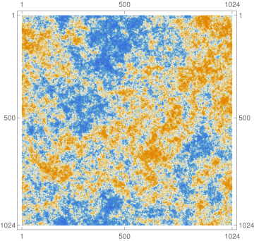
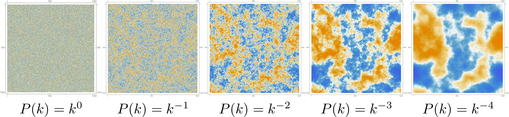

In Cosmology, we are often interested in understanding the spatial correlations amongst fluctuations
of various kinds.
The most well-known example is that of temperature fluctuations in the Cosmic Microwave
Background (CMB). The light which travels to us from the primordial universe is very nearly, but not quite,
homogeneous.
The important deviations from homogeneity are captured by the statistics of the fluctuations about this constant
background. For instance, one
could choose a fixed angle and average the product of fluctuations separated by this angle over the entire sky. A
non-zero result demonstrates correlations between spatially separated regions. Repeating this experiment for
various angles reveals the full spatial dependence of such correlations which encodes important
information about the early universe.
One can imagine performing the above experiment on the fluctuation map below, which clearly shows fluctuations
which are correlated on different spatial scales.

A realization of a two-dimensional, Gaussian random field with a scale-invariant P(k)\propto
k^{-2} power spectrum. The statistics of the realization are fully encoded in the
two-point function \langle
\phi({\bf x})\phi({\bf y})\rangle, due to its Gaussian nature.
Such fluctuations are described by random fields, which are the generalization of random variables
to quantities which take on different values at different points in space (and/or time). Denoting such fields by
\phi({\bf x}), their statistics are characterized by correlation functions of the form
\langle
\phi({\bf x})\phi({\bf y})\rangle (computed as in the CMB thought experiment above), where the angled
brackets indicate an expectation value.
While we can also consider higher-point correlation functions involving additional powers of the field
\phi({\bf x}),
there exists a special Gaussian limit in which all higher-order correlators are determined by the
two-point function and we will primarily focus on this regime.
Because of the homogeneous and isotropic nature of spatial slices, it’s convenient to discuss the
Fourier transform of the correlator which takes on the form
\langle\phi_{{\bf k}}\phi_{-{\bf k}}\rangle'=P(k) where the power spectrum, P(k)
, only depends on
the magnitude of {\bf k}, as indicated (see below for more on the notation).
P(k) thus fully determines the properties of homogeneous, isotropic, Gaussian random fields and
hence it plays a central role.
However, if handed a P(k), it’s not
very easy to visualize what a
corresponding spatial map of fluctuations would look like, making it somewhat hard to gain intuition for what a
given power spectrum means.
It would be nice to know how to generate fluctuation maps of the sort in the above figure.
In this post we answer the following question: for a given P(k) which
describes a Gaussian random field, how do we generate a simple fluctuation map which has the
correlations described by this power spectrum?
We start by reviewing some of the theory behind random Gaussian fields, which I found difficult to
find in any one place in the literature, and then sketch the practical construction of our maps
using Mathematica. The full
Mathematica code (as well as a numpy implementation in a Juptyer
notebook) can be found on my GitHub Page. The methods
used for constructing the realization are by no means optimal; our goal is just to understand a quick and
dirty method of generating realizations.
Theory Background
We start by reviewing the necessary theory background.
Correlators
First, we set notation and review basic facts about equal time correlators of scalar quantities. We
focus only on two-point functions.
A homogeneous, isotropic position space two-point corrrelator only depends on the magnitude of the
distance between the points of interest: \langle \phi({\bf x})\phi({\bf y})\rangle=A(|{\bf x}-{\bf y}|)
. Due
to this fact, the Fourier transformed correlator is proportional to a delta function and only
depends on the magnitude of the momentum (i.e. wavevector):
where we use \tilde{\delta}({\bf k}+{\bf p})\equiv (2\pi)^{d}\delta^{d}({\bf k}+{\bf p}) and
later
\tilde{{\bf k}}\equiv {\bf k}/(2\pi) to minimize the number of explicit 2\pi
factors.
appearing. We also put primes on correlators which have their associated delta-functions and 2\pi
factors removed, as in
\langle \phi_{{\bf k}}\phi_{-{\bf k}}\rangle'=P(k).
Two functional forms of the power spectrum are particularly important: white noise and scale
invariant power spectra.
White Noise:P(k)\propto C with C constant. This corresponds to a position space
correlator of the form \langle \phi({\bf x})\phi({\bf y})\rangle\propto C\delta^{d}({\bf x}-{\bf y})
, i.e.
there are no correlations between fluctuations at separated points if the power spectrum is
described by white noise.
Scale Invariant:P(k)\propto k^{-d} in d spatial dimensions. A scale invariant
Inflation predicts a nearly-scale-invariant power spectrum, P(k)\propto k^{-d+n_{s}-1}, where
the spectral tilt n_{s}, defined in this manner for historical reasons, is generically
predicted to be slightly red, meaning n_{s}-1 is small and negative, so that
P(k) grows with decreasing k. A red spectrum corresponds to larger fluctuations at
larger physical distance scales.
Planck 2018's bounds on the scalar tilt are n_{s}= 0.9649 \pm 0.0042.
power spectrum corresponds to fluctuations which have the same correlations no matter how separated
the
two points are: \langle \phi(\lambda{\bf x})\phi(\lambda{\bf y})\rangle=\langle
\phi({\bf x})\phi({\bf y})\rangle for all \lambda.
Probability Distributions: Functions and Functionals
We now review how probability distributions work for continuous, Gaussian random fields. We start
with a brief review of the analogous theory for continuous random variables.
Probability Distribution Functions (PDF): Given some continuous random variable q, the
probability that q lies in some range {\rm d} q is given by
\mathcal{P}(q){\rm d} q, where \mathcal{P}(q) is
the PDF. The PDF is normalized as \int\mathcal{P}(q){\rm d} q=1 and the expectation value of
q^{n} is
given by
where A_{ij} is some positive definite matrix (and sums over repeated indices are implied). The
corresponding Gaussian two-point statistics are then given by:
where A^{-1}_{ij} is the inverse of the matrix A_{ij}. All higher-order
correlators involving more factors of q_{i} can be written in terms of A_{ij},
which is a special property of the Gaussian distribution.
Probability Distribution Functionals are perhaps less familiar, but they are exactly the
same idea as PDFs simply applied to the case of random fields such as \phi({\bf x}),
rather than random variables such as q_i. We will only focus on the case of Gaussian functionals
whose form and properties are defined in exact analogy to the PDF case. Starting with a position
space field \phi({\bf x}), the Gaussian functional \mathcal{P}(\phi({\bf x})) is
written as
where we have omitted the normalization factor. Correlators are then computed by a path integral
over all field values \phi({\bf x}). The outcome of the integral is determined in analogy to the
PDF case. For instance, the two-point correlator is:
White noise corresponds to the simple case where A({\bf x},{\bf z})=C\delta^{d}({\bf x}-{\bf z})
and so
A^{-1}({\bf x},{\bf z})=\frac{1}{C}\delta^{d}({\bf x}-{\bf z}), for instance. Assuming spatial
homogeneity
and isotropy, it is straightforward to Fourier transform the above formulas in order to derive their
momentum space analogues:
Clearly, the function A(k) above is simply the inverse of the power spectrum:
P(k)=A^{-1}(k). By adding terms cubic and higher order in \phi_{\bf k} to the
exponential in
\mathcal{P}[\phi_{\bf k}], the distribution is made non-Gaussian. The search for non-Gaussian
signatures in
Cosmological statistics is part of cutting-edge experimental efforts, but further discussion
The Astro2020 Science White Paper on Primordial Non-Gaussianity
(which I was involved in) gives a research-level argument for the important role that non-Gaussianity plays in
understanding
the early universe. A pedagogical introduction to non-Gaussianity in inflation can alternatively be found in
Eugene Lim’s excellent notes on the subject.
of these issues falls outside of the scope of this post.
Implementation
We now demonstrate how to generate a realization, given P(k). We first present the logic and
outline the steps in the process. Then we show how to practically implement these ideas in
Mathematica.
The Logic and Steps
The logic is simple: if we’re given a white noise field \varphi_{\bf k}
which has \langle \varphi_{{\bf k}}\varphi_{-{\bf k}}\rangle'=1
, then we can create a field with the desired power spectrum simply by defining \phi_{\bf k}\equiv
P^{1/2}(k)\varphi_{\bf k}. The new field has the desired statistics, by construction, since
Spelled out in more detail, we will perform the following steps:
Consider a white noise field of unit amplitude: \varphi_{{\bf k}} with \langle
\varphi_{{\bf k}}\varphi_{-{\bf k}}\rangle'=1.
Generate a position space realization of the white noise, denoted by R_{\rm white}({\bf x}).
That is, R_{\rm white}({\bf x}) is a particular map showing the values of \varphi({\bf
x})
at various positions {\bf x} and for which \langle\varphi({\bf
x})\varphi({\bf y})\rangle'=\delta^{d}({\bf x}-{\bf y}).
Multiply R_{\rm white}({\bf k}) by the square root of the power spectrum to create
R_P({\bf k})=P^{1/2}(k)R_{\rm white}({\bf k}).
Fourier transform R_P({\bf k}) back to position space to get the desired realization:
R_P({\bf x})=\int{\rm d}^d \tilde{k}\, e^{i{\bf k}\cdot{\bf x}} R_P({\bf x}).
Therefore, given a realization of the white noise field , we just have to multiply its Fourier space
realization by and inverse Fourier transform to get a position space realization of \phi({\bf x}).
The key fact is that generating a white noise realization is easy: since spatially separated points are
uncorrelated, white noise is generated by independently drawing each pixel value from a normal distribution.
The above presentation is slightly idealized, as we’ll have to make the realization on a discrete grid; we won’t
be
able to work with continuous variables. Practical considerations which arise from working on a
lattice are covered in the following sections.
From Continuous to Discrete
For concreteness, we focus on creating two-dimensional realizations on N\times N grids, with
N an even number. The generalization to higher dimensions is straightforward. In passing to a
lattice, our continuous fields \phi({\bf x}) and \phi_{\bf k} are replaced by
the discrete
quantities \phi^{{\bf x}}_{ab} and \phi^{{\bf k}}_{ab}, respectively, where
a,b\in\{0,\ldots,N-1\}. \phi^{{\bf x}}_{ab}
is the value of the field at the point (a,b) on the grid. The continuous Fourier transform which
related \phi^{{\bf x}}_{ab} and \phi^{{\bf k}}_{ab} is replaced by a discrete
one:
where x_a\equiv a and k_a\equiv \frac{2\pi a}{N}. Given real \phi^{{\bf
x}}_{ab} and even
N, \phi^{{\bf k}}_{ab} has the following properties
\phi^{{\bf k}}_{ab}=\phi^{{\bf k}}_{(a+\alpha N)b}=\phi^{{\bf k}}_{a(b+\alpha N)} for any
integer
\alpha
\phi^{*{\bf k}}_{ab}=\phi^{{\bf k}}_{-a-b}
The above further imply the following important property:
\phi^{*{\bf k}}_{a(N/2+b)}=\phi^{{\bf k}}_{a(N/2-b)} and similar with the other index.
Building a Realization
Now we walk through the steps involved in actually building a realization in Mathematica.
White Noise
First, we construct a grid of white noise. When passing to the grid, the unit white noise
probability distribution functional becomes the following ordinary PDF:
where Nsize is the size of the grid.
WhiteNoise is our realization R_{\rm white}({\bf x}) and
building R_{\rm
white}({\bf k}) is very simple: we just pass WhiteNoise through
the
built-in
Fourier function:
WhiteNoiseFourier = Fourier[WhiteNoise]
Constructing the Fourier Realization (and Indexing Conventions)
The Fourier space realization then needs to be multiplied by the square root of the power spectrum.
Some care must be taken to ensure that the resulting field \phi^{{\bf k}}_{ab}
obey the reality condition derived in the previous section,
\phi^{*{\bf k}}_{a(N/2+b)}=\phi^{{\bf k}}_{a(N/2-b)}.
If we did the naive construction and took the white noise realization
values \varphi^{{\bf k}}_{ab}
and simply multiplied by P^{1/2}(k) with k=\frac{2\pi}{ N}\sqrt{a^2+b^2} to
build
\phi^{{\bf k}}_{ab}=P^{1/2}(k)\varphi^{{\bf k}}_{ab}, then we'd find
\phi^{*{\bf k}}_{a(N/2+b)}\neq\phi^{{\bf k}}_{a(N/2-b)}, due to the power spectrum factor.
Such a \phi^{{\bf k}}_{ab} would corresponding to imaginary
\phi^{{\bf x}}_{ab}. The array
\phi^{{\bf k}}_{ab} can instead be properly constructed as in
In the second line above, the k in P^{1/2}(k)\varphi^{{\bf k}}_{a(b-N)} is
evaluated at
k=\frac{2\pi}{N}\sqrt{a^2+(b-N)^2} and similar for other lines.
The factors of N can also be removed in the indices of the \varphi^{{\bf k}}'s,
using the
previously mentioned properties of \varphi^{{\bf k}}.
Note that these manipulations effectively result in the the a,b indices running over the values
\{0,\ldots, N/2,-N/2+1,\ldots,-1\}, rather than \{0,\ldots, N-1\}. For this
reason, it is
common (but not entirely universal)
to index discrete Fourier transforms with index values running over precisely this set. For
instance, Mathematica and numpy both use this
convention.
In the limit P(k)\to 1, Fourier transforming \phi^{{\bf k}}_{ab}
yields the original position space white noise realization we started with, \varphi^{{\bf k}}_{ab}
,
despite the above manipulations. The position space field
is then built via
Step 2: Next, build the power spectrum function. Take it to be of the power law form: P(k)\propto
k^{-n}. Because this P(k) is divergent at k=0 (assuming n>0
), we will set the
value of the power spectrum to zero at this one point. This is implemented in
Mathematica as:
Above, the real part of the transform was taken using Re because numerical
errors
induce tiny imaginary components in the final calculation of \phi^{{\bf x}}_{ab}.
The results of the realization for various power spectra can be seen in Fig. 2.

Fig. 2: Realizations for P(k)=k^{-n} with n\in\{0,1,2,3,4\} from
left to right.
The n=0 realization is white noise while the n=2 realization is scale
invariant. The
length scale over which fluctuations are correlated increases as n increases.
An Example in d=3
Finally, we present the results of a higher dimensional realization: Fig. 3 is a GIF which shows
successive slices of a d=3 realization for a power spectrum P(k)=k^{-4}.
Fig. 3: Slices of a d=3,
P(k)\propto
k^{-4} realization. A scale invariant power spectrum
P(k)\propto
k^{-3} is more physically relevant, e.g. for inflation, but leads to a less interesting GIF.